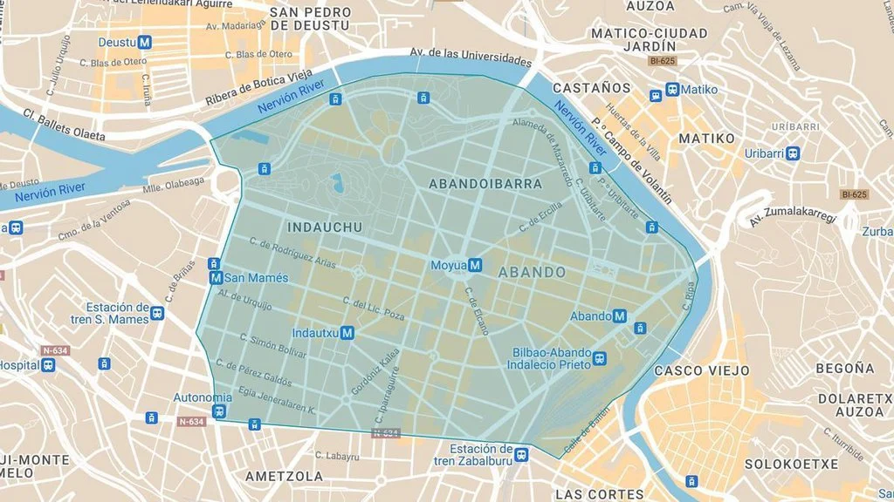
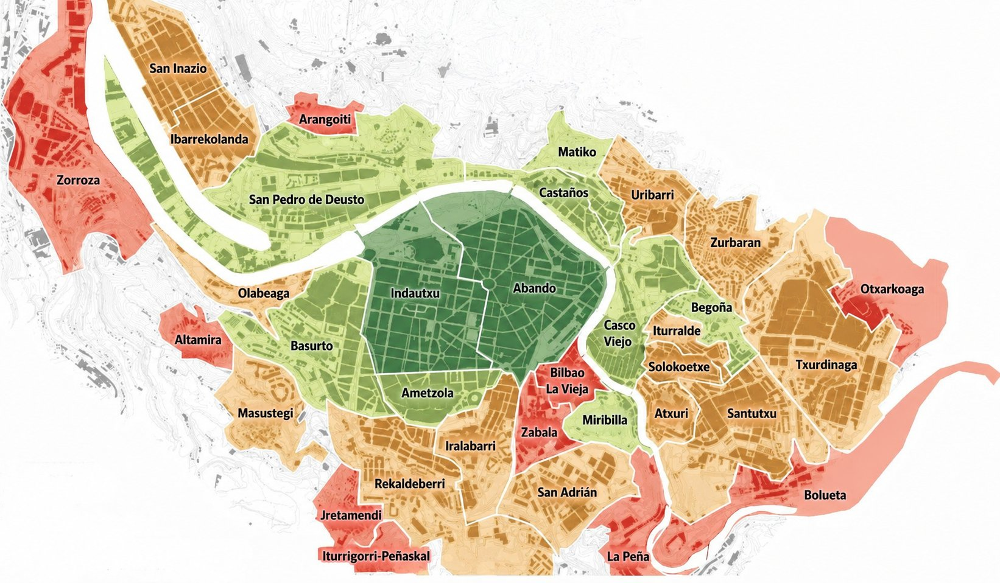

Sábado, 28 de agosto de 2027
Asador Arraiz · Bilbao
El plan
La idea es sencilla: pasarlo bien y disfrutar todos juntos de un día divertido, en un entorno precioso, con mucha comida, mucha bebida y las mejores compañías. Sin prisas, sin protocolos, solo ganas de celebrarlo con vosotros.
Confirmación de asistencia
Para organizarlo todo bien, necesitamos saber si podréis acompañarnos. Llamadnos o escribidnos un WhatsApp:
Cuando nos confirméis, decidnos también, por favor:
Así podemos avisar al asador con tiempo para que nadie se quede con hambre.
Y si tenéis cualquier duda — alojamiento, transporte, qué hacer en Bilbao, recomendaciones varias — escribidnos sin problema. Estamos para ayudaros.
Por favor, confirmad antes del 1 de abril de 2027.
Recomendaciones
Queremos que disfrutéis al 100 % del viaje a Bilbao. Por eso, os recomendamos que le echéis un vistazo a nuestras recomendaciones: dónde dormir, dónde comer, qué visitar y todo lo que conviene saber para que el fin de semana sea redondo.
Coche, tren, avión y autobús desde Madrid, Fuente el Fresno y Zamora.
02OTA, parkings públicos y la buena noticia sobre los sábados de agosto.
03Cinco zonas y hoteles para todos los gustos. Reservad pronto.
04Lo imprescindible de Bilbao y los alrededores que merecen la pena.
05Pintxos, zonas y bares clásicos para hacer un buen poteo.
06La Aste Nagusia. Lo que conviene saber antes de aterrizar en Bilbao.
07La tarjeta Barik, horarios, baños públicos y otros detalles útiles.
Cómo llegar
Os contamos las distintas opciones para llegar. Importante: el 28 de agosto cae dentro de la Aste Nagusia (Semana Grande de Bilbao), así que puede haber cortes de tráfico en el centro y mucha gente por la ciudad. Mejor reservad transporte y alojamiento con tiempo.
Unos 400 km y entre 4 h y 4 h 30 min.
Ruta recomendada: A-1 dirección Burgos → AP-1 hasta Armiñón → AP-68 hasta Bilbao.
Peajes: 12,40 € en la AP-68 (Miranda de Ebro–Bilbao).
Renfe opera la línea Madrid Chamartín – Bilbao Abando. Trayecto de unas 4 h 30 min, con paradas como Burgos y Miranda de Ebro.
Ida y vuelta desde unos 70–100 € (más barato cuanto antes se reserve).
Reservas en renfe.com.
Vuelos directos Madrid–Bilbao de unos 55 minutos. Iberia, Air Europa y Vueling operan varias frecuencias diarias.
Ida y vuelta desde unos 60–100 € reservando con tiempo.
Webs: iberia.com, aireuropa.com, vueling.com.
Del aeropuerto al centro: la línea Bizkaibus A3247 conecta el aeropuerto con Bilbao centro en unos 25 minutos por 5 €.
ALSA opera la línea Madrid–Bilbao con varias salidas diarias desde la estación de Avenida de América. Trayecto de 4 h 30 min a 5 h.
Ida y vuelta alrededor de 50 € según día y antelación.
Reservas en alsa.es.
Unos 520 km y entre 5 h y 5 h 30 min.
Lo más práctico es subir a Madrid por la A-4 (unos 130 km, 1 h 15 min) y desde ahí coger la A-1 + AP-1 + AP-68 hasta Bilbao como se indica en la ruta de Madrid.
Peajes: 12,40 € en la AP-68.
No hay conexión directa. Lo razonable es desplazarse a Madrid (en coche o en autobús a Ciudad Real, y luego AVE) y desde Madrid coger tren o vuelo a Bilbao según la opción que más os convenga.
Webs: renfe.com, iberia.com, aireuropa.com, vueling.com.
Unos 376 km y entre 3 h 45 min y 4 h.
Ruta recomendada: A-11 hasta Tordesillas → A-62 hacia Burgos → enlazar con la AP-1 y luego la AP-68 hasta Bilbao.
Peajes: 12,40 € en la AP-68.
No hay tren directo Zamora–Bilbao. Lo más cómodo es ir en tren hasta Valladolid o Madrid y desde ahí coger el tren a Bilbao.
Reservas en renfe.com.
ALSA y otras compañías operan la línea Zamora–Bilbao (algunas con transbordo en Valladolid). Duración de unas 5 h 30 min.
Ida y vuelta desde unos 40–60 € según día y antelación.
Reservas en alsa.es.
Atentos al estado de la carretera al llegar a Bilbao: durante la Aste Nagusia hay cortes de tráfico en el Casco Viejo, en torno al Teatro Arriaga y en El Arenal, y en distintas zonas según el programa de cada día. Si entráis en coche, dejadlo en parking y moveos por la ciudad andando o en metro.
Aparcamiento
Bilbao tiene OTA (zona regulada de pago) azul y verde en casi todas las calles del centro, así que aparcar en superficie no es lo más práctico. Si venís a pasar varios días, lo recomendable es dejar el coche en un parking público durante toda la estancia y moveros andando o en metro.
Bilbao tiene OTA en gran parte del centro. La buena noticia para vosotros, que venís en agosto:
Bilbao tiene una Zona de Bajas Emisiones que cubre los barrios de Abando, Indautxu y Abandoibarra. Es importante saberlo si venís en coche:

Los únicos 7 parkings dentro de la ZBE donde puede entrar un vehículo con etiqueta B son los seis primeros de la lista. El acceso solo está permitido para ir directos al parking, no para circular por la zona.
Con etiquetas 0, ECO o C podéis aparcar también en cualquier otro parking público dentro de la ZBE (hay más parkings disponibles en Abando, Indautxu y Abandoibarra). En cambio, sin distintivo ambiental no se puede aparcar en ningún parking dentro de la ZBE.
La moratoria que permite a la etiqueta B usar los 6 primeros parkings está vigente hasta el 31 de diciembre de 2029.
Si no podéis entrar en la ZBE (sin distintivo o con etiqueta B y queréis evitar restricciones), estos parkings están en Deusto y la zona de Basurto / San Mamés, fuera de la zona regulada y a una distancia razonable del centro andando o en metro.
Reservar plaza con antelación a través de apps como Parclick, Parkimeter o ElParking suele salir más barato. Y durante la Aste Nagusia, mejor reservar con tiempo.
Alojamiento
Bilbao es una ciudad pequeña y bien comunicada: desde el centro a casi cualquier sitio se llega andando o en metro.
Estas son las seis zonas que os recomendamos para alojaros, ordenadas de más céntrico a más residencial. Si queréis dormir tranquilos, mejor las últimas; si queréis estar cerca de todo, las primeras.

Zona moderna y vibrante del Ensanche bilbaíno, con muchos bares, tiendas y vida local. Es de las zonas más cómodas para alojarse: céntrica, bien comunicada y con ambiente todo el día, pero algo más recogida que el entorno del Casco Viejo. Buena opción si queréis estar a tiro de piedra de todo sin pillar de lleno el meollo de las fiestas.
Estaciones de metro: Indautxu (L1 y L2), San Mamés (L1 y L2).
La parte más céntrica y elegante de Abando, la franja comprendida entre la Alameda de Urquijo y la Alameda de Mazarredo. Aquí está la plaza Moyúa, el corazón comercial de Bilbao, edificios señoriales, hoteles de gama media-alta y mucha vida diurna. Excelente base si queréis estar en el centro absoluto pero algo más alejados del bullicio nocturno del Casco Viejo.
Estaciones de metro: Moyúa (L1 y L2), Abando (L1 y L2).
Esta es la gran zona al norte de la ría e incluye los barrios de San Pedro de Deusto, Ibarrekolanda y San Inazio. Pleno barrio universitario, vida local, calles tranquilas y bien conectado por metro y tranvía con todo el centro en pocos minutos. Buena opción si queréis dormir lejos del bullicio del centro pero con acceso rápido a todo.
Estaciones de metro: Deustu (L1 y L2), Sarriko (L1 y L2), San Inazio (intercambiador L1 y L2).
Zona residencial al sur de Indautxu, sin glamour pero muy práctica. Bien conectada por cercanías con el centro (5–10 minutos) y con buena oferta de hoteles de gama media a precios algo más ajustados que en el centro absoluto.
Estaciones cercanas: Ametzola (Cercanías Renfe C-3), Zabalburu (L3) a 5 minutos a pie.
Barrio residencial al oeste del centro, junto al estadio de San Mamés. Zona tranquila, con vida local y muy bien comunicada por metro, cercanías y autobús. A 10 minutos andando del centro y del Guggenheim por la ría.
Estaciones cercanas: San Mamés (L1, L2 y Cercanías Renfe C-1 y C-2), Basurto-Hospital (Cercanías C-1 y C-2).
Uno de los barrios más populares y con más vida de Bilbao, al este. Ambiente de barrio, bares de pintxos a precios populares y buen acceso al centro en metro (3–5 minutos al Casco Viejo). Buena opción si buscáis precios más ajustados y experiencia local.
Estaciones de metro: Santutxu (L1 y L2), Basarrate (L1 y L2).
Si los precios en Bilbao durante la Aste Nagusia os parecen altos, varios municipios del Gran Bilbao ofrecen alojamiento más barato, son seguros y tienen conexión directa en metro o cercanías al centro de Bilbao en 10–25 minutos.
Durante la Aste Nagusia, estas son las zonas más animadas y ruidosas por las noches. Si os apetece estar en pleno meollo de las fiestas, son la mejor opción; si queréis descansar, mejor reservad en alguna de las zonas anteriores.
Como referencia, los precios suelen ir desde unos 70–100 € por noche en hoteles más sencillos hasta 250–350 € en los de 4–5 estrellas durante la Aste Nagusia. No esperéis demasiado para reservar.
Qué visitar
Si os animáis a alargar el viaje, estas son algunas paradas que merecen la pena. Bilbao se ve bien en un día o dos, y luego la costa vasca está al lado.
El edificio de Frank Gehry que cambió la cara de la ciudad. Aunque no entréis, el exterior y los alrededores ya merecen la visita.
El corazón antiguo de Bilbao. Tiendas, bares, la Catedral de Santiago y la Plaza Nueva.
Paseo por la ría, cruzando el famoso puente blanco de Calatrava. Conecta perfectamente con el Guggenheim.
Sube en pocos minutos al monte Artxanda para ver Bilbao desde arriba. Imprescindible al atardecer.
La Catedral del fútbol vasco. Aunque no haya partido, el estadio del Athletic Club merece una visita. Se pueden hacer visitas guiadas al interior.
Uno de los mercados cubiertos más grandes de Europa, con zona de pintxos en la planta de arriba.
A 20 minutos en metro. Paseo por la playa de Ereaga, el puerto viejo de Algorta y el puente colgante de Portugalete (Patrimonio de la Humanidad).
La ermita sobre la roca, conectada por un puente de piedra y 241 escalones. A unos 35 minutos en coche. Hay que reservar entrada gratuita online.
Pueblos pesqueros de la costa vizcaína. Mundaka es famoso por su ola surfera y la Reserva de la Biosfera de Urdaibai.
Uno de los pueblos más bonitos de la costa. Playa, puerto y la isla de San Nicolás (a la que se llega andando con marea baja).
A una hora en coche o autobús. La Concha, la Parte Vieja, el monte Igueldo... y por supuesto, más pintxos.
Come todas las alubias que quieras, con sus sacramentos. Después de disfrutar de la gastronomía de la zona, date un paseo por este paraje natural. Esta zona eran antiguas minas de hierro de Vizcaya, donde se cantaba el alirón cuando se encontraba hierro.
Dónde comer
Bilbao es una ciudad para callejear y picotear. Aquí van algunas zonas y bares clásicos para empezar la ruta. Lo bueno: están todos cerca, así que podéis ir saltando de uno a otro.
El corazón histórico. La Plaza Nueva concentra varios de los bares más conocidos. Pintxos entre 2 y 3,50 € y zuritos en torno a 1,50–2,50 €.
La zona moderna del centro. Locales más cuidados, pintxos algo más elaborados (entre 3 y 4 €).
Calle Pozas y alrededores del estadio. Mucho ambiente y precios algo más ajustados.
Consejo local: en el Casco Viejo los domingos cierran pronto, así que si vais en domingo, mejor a mediodía.
Aste Nagusia
Vuestra boda cae en plena Semana Grande. Lo bueno: la ciudad estará espectacular, con ambiente de fiesta por todos lados. Lo "malo": habrá mucha gente, mucho ruido y algunos cortes de tráfico. Aquí va lo básico para que sepáis qué os vais a encontrar.
La Aste Nagusia 2027 se celebra del sábado 21 al domingo 29 de agosto (siempre empieza el sábado siguiente al 15 de agosto y dura 9 días). El día de la boda, 28 de agosto, es el penúltimo día de las fiestas. Pleno apogeo.
Las fiestas se organizan en torno a las comparsas (konpartsak): agrupaciones vecinales que montan sus txosnas (carpas con barra y cocina) en el recinto festivo, principalmente en El Arenal. Cada noche hay actividades, conciertos, baile y los famosos fuegos artificiales sobre la ría a las 22:30 (Concurso Internacional de Pirotecnia, durante toda la semana).
El símbolo de las fiestas es Marijaia, una muñeca gigante que preside El Arenal hasta el último día, en que se quema en una hoguera al final de los fuegos.
El epicentro de las fiestas está en estas zonas. Si reserváis hotel cerca, dormiréis poco; si estáis lejos, las cruzaréis fácilmente en metro o andando para disfrutar.
Tips prácticos
Una mezcla de cosas que conviene saber para moverse por Bilbao sin quebraderos de cabeza.
Bilbao es verde por algo: llueve con cierta frecuencia incluso en verano. En agosto las temperaturas suelen estar entre 18 y 28 °C, pero puede caer una buena tromba en cualquier momento. Llevad una chaqueta ligera o paraguas plegable, no os la juguéis. Aunque a veces hace mucho calor, la humedad del Cantábrico se nota.
Bilbao tiene una red de transporte público pequeña, eficiente y bien conectada: metro, tranvía, autobuses urbanos (Bilbobus) e interurbanos (Bizkaibus), Renfe Cercanías y el Funicular de Artxanda. Todo se puede pagar con la tarjeta Barik.
Bilbao es muy peatonal y se cruza el centro de un extremo a otro andando en 30 minutos. Del Casco Viejo al Guggenheim hay 20 minutos a pie por la orilla de la ría, un paseo precioso. Para distancias más largas o si llueve, el metro es rapidísimo.
Las tres opciones funcionan bien en Bilbao. Hay paradas de taxi en puntos céntricos y también se paran en la calle. Para Cabify y Uber conviene pedir con algo de antelación, especialmente durante la Aste Nagusia.
Hay baños públicos gratuitos repartidos por la ciudad (en la mayoría de plazas del centro y parques). En zonas turísticas como el Casco Viejo y junto al Guggenheim también hay módulos. En los bares, eso sí, lo habitual es que te pidan consumir antes de usar el baño.
Durante la Aste Nagusia se instalan baños químicos adicionales en El Arenal y zonas de fiesta.